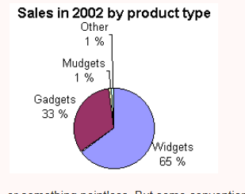

Below chart image has textual representation for the chart, which can be read by screen-readers
The below chart description in a visually hidden element.
This chart represents the sales in 2002 by product type. Widgets has the highest sales of 65%, followed by Gadgets with 33%, while mudgets and others contribute 1% each
The below chart images have 'longdesc' attribute which points to a URL with the description text or tabular data.
The below chart images does not provide any descriptive text which represents the data in the image.